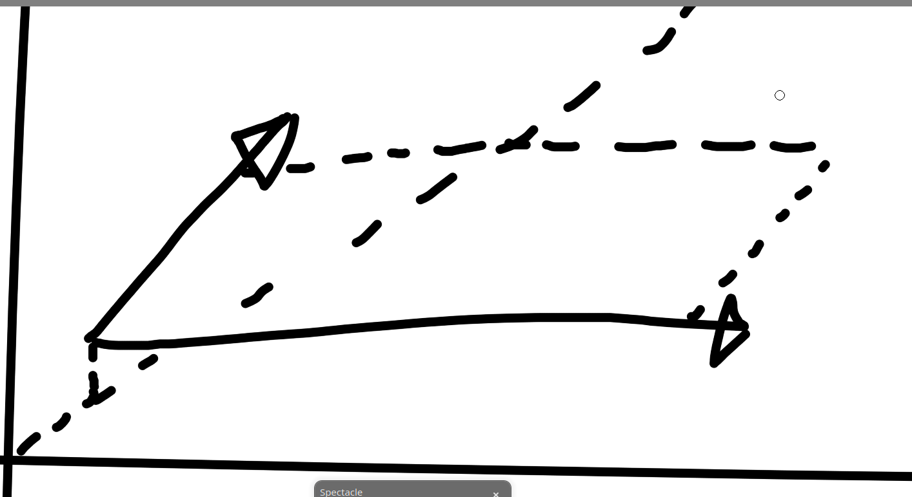
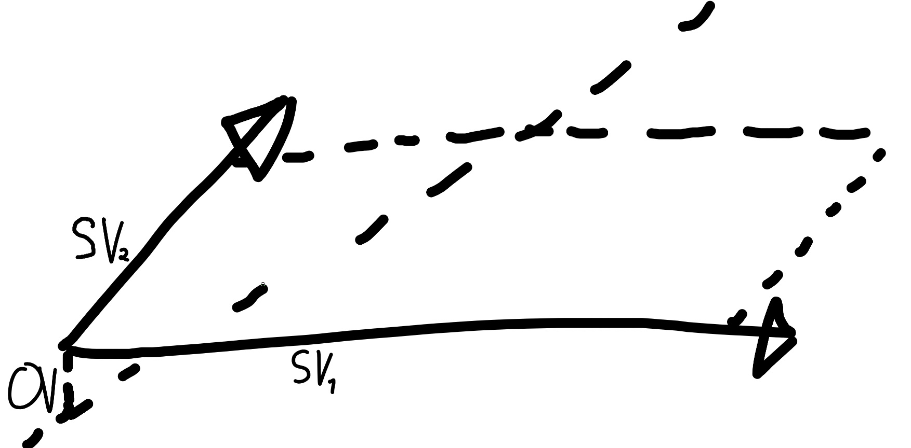
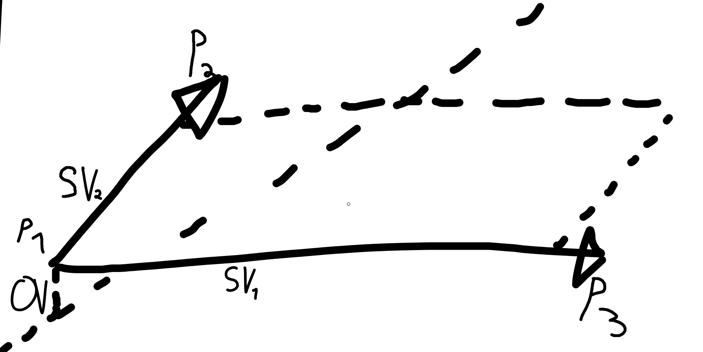

Erstmal, was ist eine Ebene?:
Eine Ebene kann man sich vorstellen wie eine Wand, oder einen Boden.
(welche/welcher aber auch schräg sein kann)
Auch für die Ebene gibt es eine Parameterdarstellung.
Der Unterschied ist hier, das es zwei Richtungsvektoren gibt, jedoch bevorzugt es
unsere Lehrerin diese als "Spannvektoren" zu bezeichnen. Darum werde ich dies ab jetzt auch tun.



Wenn uns also drei Punkte gegeben sind, ermitteln wir zwei Vebindungsvektoren.
(Am einfachsten mit dem selben Start),
geben jedem noch einen Parameter (
r
;
s
), addieren alles zusammen und es sieht in etwa so aus: